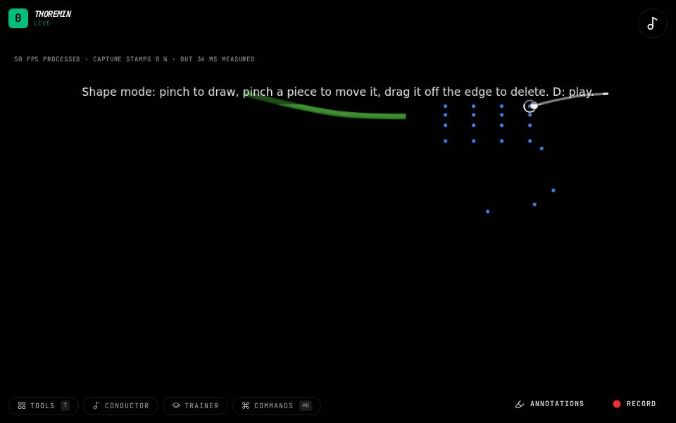

Instruments › Drawn instruments
Drawn Pieces

What to do
- Pinch your thumb and index finger and draw a shape in the air.
- Close the shape for a drum; leave it open for a string.
- Pinch a piece to move it; drag it off the edge to delete it.
- Press D to play: tap a drum, rest a finger on it, or swipe across a string.
Draw your own instrument in the air, then play it. Bigger pieces sound lower, and every stroke sounds a little different: how fast you strike, where you land (centre or rim, middle or end of a string) and how sharply you stop all change the sound, as on a real drum.
How it works
Each piece has three dials in the Drawn pieces section. Shape goes from freeform (your stroke as drawn) to perfect (snapped to the nearest circle, rectangle, triangle, line or arc), and can be changed after drawing. Feel sets how much your touch matters: at the left every stroke sounds the same, at the right every nuance is heard. Tone goes from dark, soft and long to bright, hard and short. A piece's note comes from its size, in the instrument's scale, unless you pick one. The pieces are drawn in 3-D over the video and are saved with the instrument. It lives in a separate plugin, thoremin-ar, loaded only when you pick it.
Its settings: Drawn pieces. Every knob: the manual.